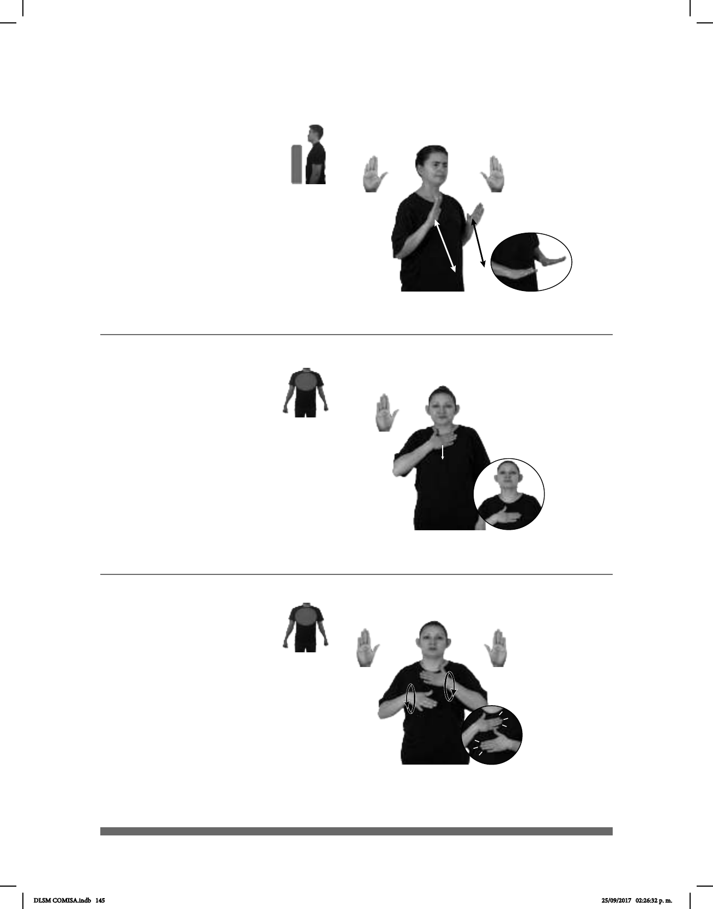

145
(B-P 103)
MAESTRO+MUJER CALMA pro-ELLA YA PEDIR
La maestra nos pidió calma.
(B-P 104)
PUEBLA MUCHOS CAMOTES pro-YO YA COMER
Comí muchos camotes en Puebla.
Seña: SS
B-P.2
Palmas hacia abajo.
Del pecho a la cintura.
Recto repetidamente.
1. sust. f. Estado de la
naturaleza, de una situación o de
ánimo, que se caracteriza por la
ausencia de ruido, de actividad o de
agitación. 2. sust. f. Lentitud,
tranquilidad o paciencia para hacer
algo.
Seña: SM
B-P.2
Palma hacia adentro.
Sobre el cuello y se desliza
hacia el pecho.
Recto.
Ojos
semicerrados, hombros hacia arriba.
sust. m. 1. Planta herbácea
tubérculo comestible. 2. Tubérculo de
esa planta. 3. Dulce hecho con esta raíz.
(B-P 105)
___muy
pos-MI TRABAJO MUCHO CANSAR++
Mi trabajo es muy cansado.
Seña: SB
MD y MB B-P.2
MD y MB palmas
hacia adentro.
MD y MB sobre el
pecho.
MD y MB recto
alternada y repetidamente.
Mejillas
adj. Sin energía, que
está agotado.
DLSM COMISA.indb 145 25/09/2017 02:26:32 p. m.